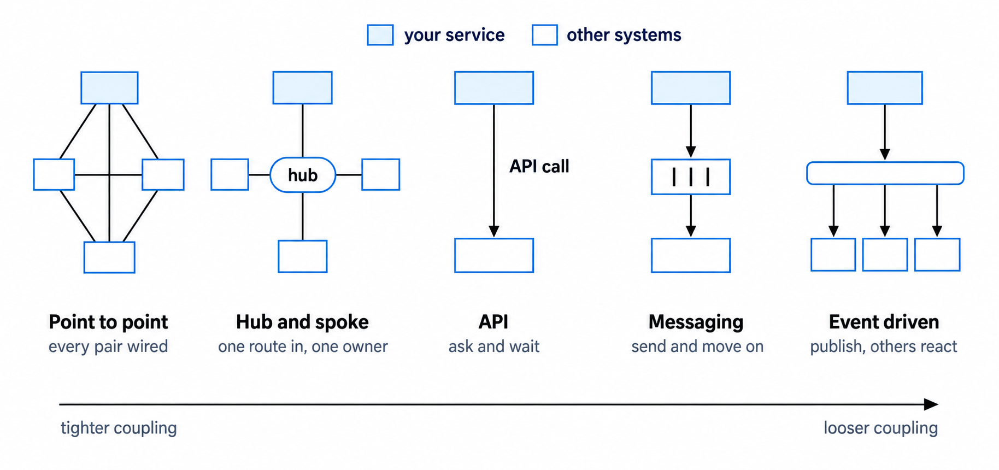
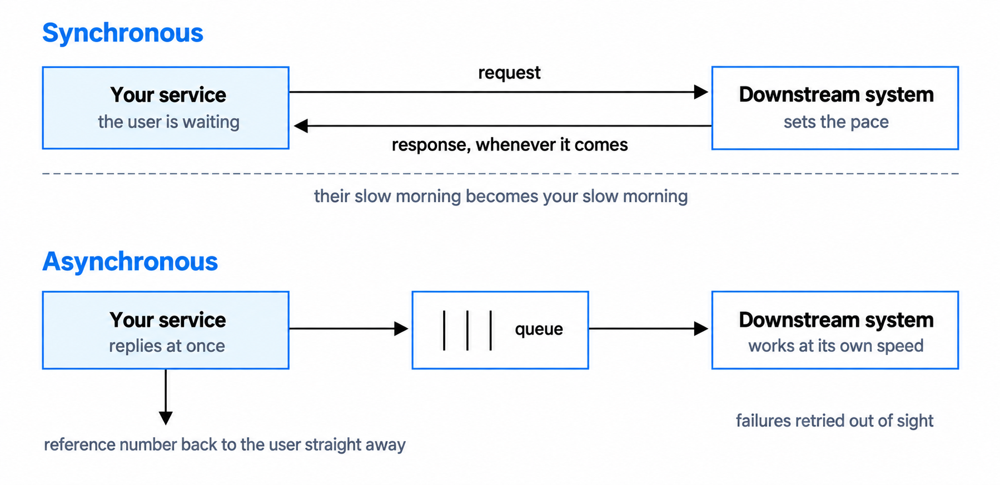
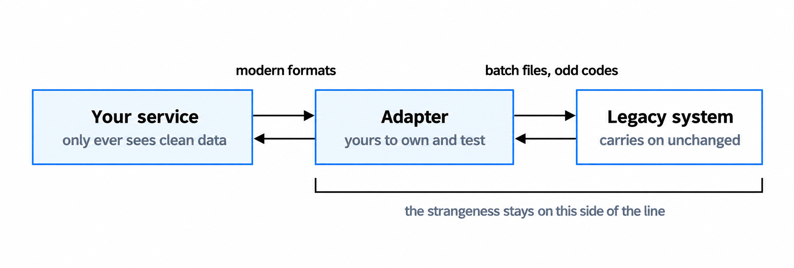
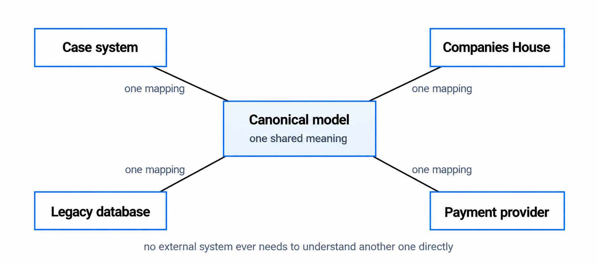

Integration patterns for government services
Connect services without spreading failure, complexity or legacy constraints.
You'll come away with:
- A practical way to choose between APIs, messaging, events and batch integration.
- Questions for assessing timing, availability, data, security and ownership.
- Ways to contain legacy behaviour and data transformation at service boundaries.
- Failure controls for retries, duplicates, unavailable dependencies and manual recovery.
Start with the interaction, not the pattern
An integration exists because one part of a service needs information or an action from another system. Start by describing that need. What must pass between the systems? Which direction does it travel? What triggers it? How quickly is it needed? Who owns each side?
Only then compare the available patterns. A direct connection may be proportionate for two stable systems. An API suits interactions where one system requests information or asks another to perform an action. Messaging allows work to wait until the receiving system is ready. An event tells interested systems that something has happened without the sender directing what each one must do. Scheduled files or batch transfers can still be appropriate when immediate processing is unnecessary or a legacy system has limited interfaces.
The Technology Code of Practice guidance on integration asks government teams to show how new technology will work with their organisation's existing technology, processes and infrastructure. It does not prescribe one integration pattern.

Looser coupling can prevent one system from controlling another's processing rate, but it adds queues, brokers, delivery rules and monitoring. A shared hub can reduce repeated connections and apply common controls, but it can also concentrate ownership and become a bottleneck. Choose the simplest pattern that meets the need and handles failure safely.
Describe the interaction first. The pattern is a response to the need, not the starting point.
Choose when the caller should wait
In a synchronous interaction, the caller waits for the other system to respond. This works when an immediate answer is necessary and the dependency can respond within the required time. It also means that slow responses or failures in the dependency can affect the caller and, potentially, the user.
In an asynchronous interaction, the service accepts and stores the work before processing it later. The caller can receive an acknowledgement or reference without waiting for every downstream step. This can protect the user journey from slow processing, but it creates new requirements for status updates, message handling, monitoring and recovery. AWS guidance on asynchronous communication highlights the need for durable acknowledgement, idempotent processing, dead-letter handling and monitoring.

Many services need both approaches. A grant service might validate required fields and store an application before confirming receipt. Checks against other systems can then run asynchronously, with the application status updated when they complete. A payment confirmation may need an immediate response, while reconciliation and reporting can happen later.
Ask these questions before deciding:
- Does the user or calling process need the answer before it can continue?
- What response time is acceptable?
- What should happen if the receiving system is slow or unavailable?
- Can the work be stored safely and completed later?
- Must messages be processed in order?
- Can the same request be processed more than once without causing harm?
- How will callers and users check progress or receive the outcome?
Use standards and shared services where they fit
The Service Standard asks teams to use open standards and standard government components where possible. The Service Manual adds an important qualification: use common platforms when their available features help meet user needs faster and more cost-effectively.
Useful government services include GOV.UK Notify for emails, text messages and letters; GOV.UK Pay for card payments; GOV.UK One Login for authentication and identity checking in eligible central government services; and GOV.UK Forms for forms that fit the platform's capabilities. Check eligibility, functional limits, data handling, support, availability and integration requirements before selecting any of them.
Do not describe a shared service as removing responsibilities that remain with your organisation. For example, GOV.UK Pay is a PCI DSS Level 1 service provider, but its guidance states that partners and services taking telephone or postal payments may still have PCI DSS obligations. The architecture should show which responsibilities the platform owns and which remain with the service team.
The UK public sector API Catalogue can help teams find existing APIs. An entry does not guarantee that an API is open to your service or suitable for its needs. Confirm access, licensing, data quality, rate limits, support arrangements and service commitments with the owning organisation.
The Service Manual guidance on APIs warns that depending on another API can tie your service's availability to that provider. Decide in advance whether you will queue the work, offer another route, use an alternative source or explain the interruption to users.
Keep legacy behaviour at the boundary
Legacy integration starts with evidence about the running system, not just its documentation. Confirm the interfaces it actually supports, the business rules it applies, the data it produces, its operating windows and the people who understand it. Test assumptions early with representative records and realistic volumes.
An adapter can translate between the legacy interface and the model used by the new service. This keeps old formats, codes and protocols from spreading through the new design. An anti-corruption layer applies the same principle where systems use different data models or business language.

The adapter is not free. It can add latency, introduce another point of failure and become difficult to remove. Decide who owns it, how it will be monitored and whether it is a permanent boundary or part of an incremental migration. If it is temporary, record what must happen before it can be retired.
Other approaches may fit better. A scheduled extract can avoid real-time dependency when delayed data is acceptable. An API façade can protect consumers from changes to the underlying system. Incremental replacement can move one capability at a time. Direct database access or screen scraping may sometimes be the only available route, but both are fragile because they depend on implementation details rather than a supported contract. Record the risk and the exit plan.
Agree what the data means
Systems can exchange data successfully and still interpret it differently. Before building the mapping, agree the meaning, format, source and ownership of each important item. Define identifiers, mandatory and optional fields, valid values, units, dates, time zones and how corrections are handled.
The government's API technical and data standards cover consistent resources, standard formats, authentication, versioning and error responses. Apply the relevant standards to the interface and document any justified exceptions.

A stable internal representation can stop every external format from spreading through your service. It does not need to become one organisation-wide canonical model. A shared model can help where several systems exchange the same concepts, but it also creates central ownership, versioning and governance work. Choose the scope that matches the problem.
Keep each transformation in a clear boundary, with an owner and automated tests. Test using representative data, including incomplete, historic and unusual records. When transformation fails, retain enough information to investigate and recover the record without exposing sensitive data unnecessarily.
Design how each integration will fail
Different failures need different responses. A short network interruption may justify a retry. Invalid data, failed authorisation or a rejected business rule will not be fixed by repeating the same request.
Use timeouts so callers do not wait indefinitely. For transient failures, use a limited number of retries with increasing delays. The retry with backoff pattern can improve resilience, but retries can also increase load and must be safe for the operation being repeated. A circuit breaker can stop repeated calls to a dependency that is already failing and allow the caller to respond another way.
For asynchronous processing, assume a message may be delivered more than once unless the chosen service contract guarantees otherwise. Use idempotency to prevent duplicate outcomes. Route messages that cannot be processed to controlled failure handling, alert the responsible team and provide a way to investigate, correct and replay them safely.
For every integration, decide:
- how a request, message or record will be traced from end to end;
- which failures can be retried and which need correction or human action;
- what the caller and the user will be told;
- what will be logged, monitored and alerted without exposing sensitive information;
- how support staff can recover stuck or failed work safely; and
- how the team will reconcile records and detect work that never completed.
An integration is not complete when data can move. It is complete when the team can detect, explain and recover a failed movement.
Create an integration view that supports decisions
Record the integrations the service depends on in a view or catalogue that the team can maintain. For each one, capture:
- the provider, consumer and business purpose
- the data or action being exchanged and its sensitivity
- the trigger, frequency, expected volume and timing requirement
- the pattern, protocol, authentication method and trust boundary
- the interface version and approach to change
- the owners and support contacts on both sides
- the timeout, retry, recovery, monitoring and reconciliation approach
Use the view to identify hidden chains of dependency, duplicated interfaces, unclear ownership, unsupported technology and single points of failure. Review it with the teams that provide and consume each interface, not only with the team building the new service.
Do not add a central integration layer by default. A gateway, broker, adapter or shared integration service can reduce duplication and apply common controls when several integrations have the same need. It can also concentrate failure, cost and decision-making. Make that choice through option appraisal and give the resulting component clear ownership.
Questions to ask on a real service
- What user or business outcome does each integration support?
- What information or action crosses the boundary, and why?
- Does the caller need an immediate response, or can the work complete later?
- What volume, response time, ordering and availability are required?
- Which government component, existing API or supported interface could meet the need?
- Who owns the data, interface, credentials and support on each side?
- How will changes to schemas, versions and business rules be managed?
- What happens when the dependency is slow, unavailable or returns invalid data?
- How will duplicate, missing, delayed and out-of-order work be handled?
- How will the team trace, monitor, reconcile and recover the integration?
This guide describes practical integration choices for Solution Architects working around UK government services. The pattern descriptions and questions are teaching aids rather than a mandatory government integration framework.
Last reviewed September 2026 against the primary government guidance and supporting technical sources below. Guidance and platform capabilities change, so check the source before relying on it.
- Technology Code of Practice: Integrate and adapt technology
- Service Standard: Use and contribute to open standards, common components and patterns
- GOV.UK Service Manual: Using common platforms
- GOV.UK Service Manual: Application programming interfaces
- GOV.UK: API technical and data standards
- UK public sector API Catalogue
- GOV.UK Notify
- GOV.UK Pay: Security and compliance
- GOV.UK One Login
- GOV.UK Forms: Check whether the platform meets your needs
- AWS Prescriptive Guidance: Asynchronous communication
- AWS Prescriptive Guidance: Anti-corruption layer pattern
- AWS Prescriptive Guidance: Retry with backoff pattern
- AWS Prescriptive Guidance: Circuit breaker pattern